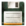
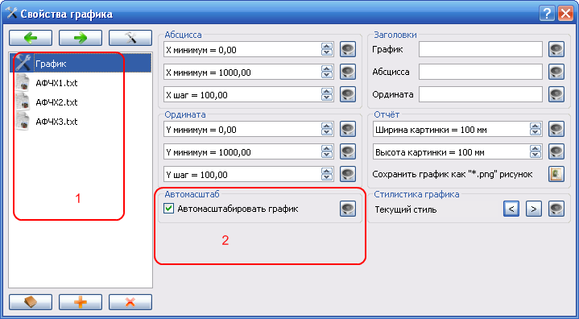
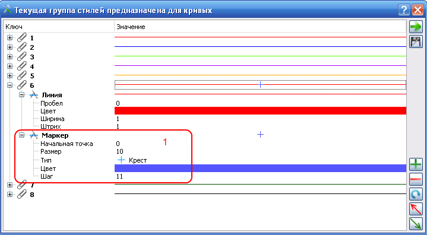

ОПИСАНИЕ ИНТЕРФЕЙСА
Действия
В главном меню программы и на панеле инструментов определены следующие действия.| Быстрая клавиша | Описание | |
| F2 | Открыть проект. Проектный файл должен иметь расширение "*.rgf" | |
| Содержит подменю со списом путей к недавнозакрытым проектам. | ||
| Перечитать текущий проект, если он открыт, иначе открыть проект. | ||
|  | CTRL-S | Сохранить проект. Проектный файл будет иметь расширение "*.rgf" |
| Сохранить текущий проект под другим именем. | ||
| CTRL-F4 | Выход из программы. | |
| CTRL-L | Добавить в проект числовые данные. | |
| CTRL-N | Создать новое окно отображения графиков. | |
| Закрыть все окна отображения графиков. | ||
| Расположить все окна отображения графиков мозаикой. | ||
| Расположить все окна отображения графиков каскадом. | ||
| Распахнуть текущее окно отображения графиков на максимально возможный размер. | ||
| Автомасштабирование графиков - разместить все кривые для каждого конкретного окна в области этого окна. | ||
| Сформировать отчёт на основе набора "*.png" рисунков. | ||
| Сформировать отчёт в формате "*.pdf", где каждое окно отображения графиков соответствует одной странице формата А4 документа "*.pdf" | ||
| Данное пункт меню сожержит подменю со списоком доступных локализаций приложения. | ||
| Отобразить диалог настройки стилей. | ||
| Открыть руководство пользователя в браузере, который используется по-умолчанию в Вашей системе. | ||
| Отобразить краткую информацию о программе. |
Также в программе определены действия, которые не имеют иконок.
| Обозначение действия | Описание |
| Автомозаика | Если действие активно, при добавлении или удалении окна отображения графиков, остальные окна будут автоматически раcполагаться мозаикой. |
| Большие иконки | Если действие активно, действия на панели инструментов будут отображаться с подписями и в увеличенном размере. |
Диалог свойств
Диалог свойств имеет следующий вид.
В области (1) отображаются действия для открытия свойств текущего графика. Действие "График" присутствует в диалоге постоянно, а остальные зависят от количества загруженных данных. Если какое-либо из этих действий активно, в заголовке диалога можно прочитать полный путь к файлу.
| Быстрая клавиша | Описание | |
| Навигация по списку (1). Сдвинуть текущую позицию в списке наверх. | ||
| Навигация по списку (1). Сдвинуть текущую позицию в списке вниз. | ||
| Навигация по списку (1). Перейти на первую позицию в списке. | ||
| Заменить текущие данные на данные из другого файла. Все кривые, использующие эти данные будут перестроены. | ||
| Удалить текущие данные. Все кривые использующие эти данные будут удалены. | ||
| Скопировать текущее значение на все остальные окна отображения графиков. | ||
| Экспортировать текущее окно с графиком в рисунок формата ".png" | ||
| < | Установить предыдущий стиль для текущего окна с графиком. | |
| > | Установить следующий стиль для текущего окна с графиком. |
Диалог настройки стилей
Диалог свойств имеет следующий вид.
Все пункты редактирования имеют интуитивно-понятные значения. По мнению автора, первичные понятийные затруднения может вызвать настройка полей "Маркер" для стиля из группы настройки кривых (1). Представьте что Ваша кривая состоит из N точек, тогда маркер будут рисоваться начиная с "Начальная точка" через каждые "Шаг" до N. В диалоге определены следующие действия.
| Быстрая клавиша | Описание | |
| Сменить группу стилей. На данный момент определно две группы стилей: стили для кривых и стили для окна с графиком. | ||
| Сохранить все изменения. Действие доступно, если изменения были произведены. | ||
| Добавить новый стиль. Действие активно если текущая позиция курсора находится в корне стиля. | ||
| Удалить стиль. Действие активно если текущая позиция курсора находится в корне стиля. | ||
| Перезагрузить текущую группу стилей. Несохранённые изменения будут утеряны. | ||
| Экспортировать текущую группу стилей в файл формата "*.ini" | ||
| Заменить текущие стили стилями из файла формата "*.ini" без сохранения. |